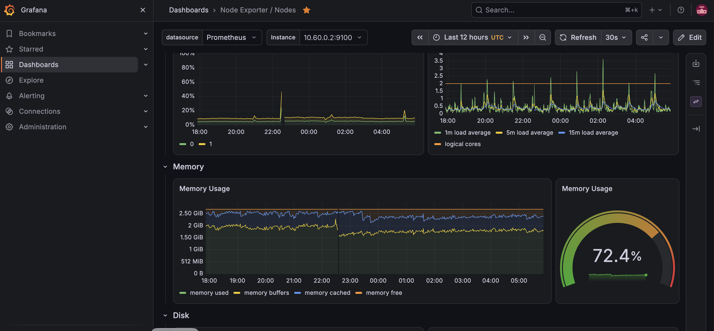
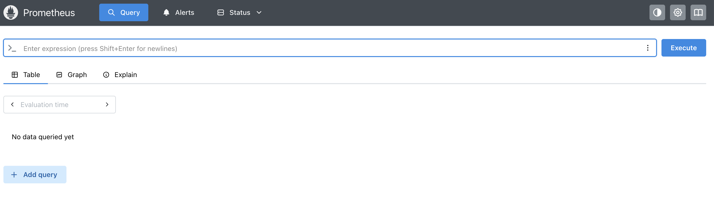

Documentation
Step-by-step runbook
Every command, every check and every problem hit while building the lab, from the WireGuard tunnel to alert rules.
PromQL queries
The queries run in Grafana and Prometheus: node health, uptime, pod state, container usage and error rates, with a note on how rate() works.
Privacy note: All IP addresses and hostnames in this public walkthrough are illustrative examples, not live infrastructure identifiers. Adapt every address to your own environment.
Cluster at a glance
Two home nodes and one cloud node, connected through the cloud hub. Packets on the purple links are WireGuard traffic carrying pod-to-pod Kubernetes traffic.
Lab architecture
The home machines sit behind a router, so the cloud VM is the WireGuard hub with the only public address. Each home machine dials out to it, and the hub forwards traffic between them. k3s runs on top of the tunnel network with flannel-iface: wg0, so pod traffic always uses the tunnel.
Nodes
| Node | Role | Tunnel address |
|---|---|---|
| kube1 | k3s server, Argo CD | 10.60.0.2 |
| kube2 | k3s agent | 10.60.0.3 |
| azure-node | k3s agent, WireGuard hub, Prometheus + Grafana | 10.60.0.1 |
Service ports
| Service | NodePort |
|---|---|
| Grafana | 30300 |
| Prometheus | 30900 |
| Argo CD (HTTPS) | 30398 |
| podinfo demo app | 30998 |
nodeSelector to the node with spare memory. Before that, the control-plane node ran out of memory.GitOps and CI/CD flow
Nobody runs kubectl apply on the cluster. A change is pushed to GitHub, checked by GitHub Actions, and pulled in by Argo CD. Try the simulator on the right: push a change through Git, or break the cluster by hand and watch it heal.
- Push. A change to a manifest goes to the repository.
- Check. GitHub Actions lints the YAML and validates it against Kubernetes schemas.
- Pull and apply. Argo CD notices the new commit and applies it.
pruneremoves what was deleted;selfHealreverts manual edits. - Observe. Prometheus scrapes the nodes and workloads; Grafana draws the results.
Try it: drift and self-heal
Build journey
Build the WireGuard hub-and-spoke tunnel
The cloud VM is the hub (10.60.0.1) and the two home machines are spokes. The hub needs UDP 51820 open and IP forwarding on; spokes use PersistentKeepalive to hold the home router's NAT mapping open. Check: every machine can ping the other two.
sudo dnf install -y wireguard-tools # RHEL (apt install wireguard on Ubuntu)
umask 077
wg genkey | sudo tee /etc/wireguard/privatekey | wg pubkey | sudo tee /etc/wireguard/publickey
sudo systemctl enable --now wg-quick@wg0
sudo wg show
ping -c 3 10.60.0.1 ; ping -c 3 10.60.0.2 ; ping -c 3 10.60.0.3Install k3s and join the workers
The important setting is flannel-iface: wg0, written to /etc/rancher/k3s/config.yaml on every node before installing. Without it, flannel chose each node's default network card and pod traffic to the cloud node failed intermittently.
# /etc/rancher/k3s/config.yaml (server)
node-ip: 10.60.0.2
advertise-address: 10.60.0.2
tls-san: [10.60.0.2]
flannel-iface: wg0
curl -sfL https://get.k3s.io | sudo sh -s - server
sudo cat /var/lib/rancher/k3s/server/node-token # token for the workers
# on each worker: config.yaml with server, token, node-ip, flannel-iface, then
curl -sfL https://get.k3s.io | sudo sh -s - agent
kubectl get nodes -o wideProve the overlay network works
Deploy nginx, expose it on a NodePort, and curl that port on every node several times. A NodePort forwards to pods wherever they run, so this tests pod networking across the tunnel. All answers must be 200; an occasional 000 means a broken path.
kubectl create deployment web --image=nginx --replicas=3
kubectl expose deployment web --type=NodePort --port=80
for ip in 10.60.0.1 10.60.0.2 10.60.0.3; do
curl -s -o /dev/null -w "$ip %{http_code}\n" http://$ip:<nodeport>
doneInstall Argo CD
Apply the upstream manifests, expose the UI on a fixed NodePort for the lab, and read the first admin password from the initial secret.
kubectl create namespace argocd
kubectl apply -n argocd --server-side -f https://raw.githubusercontent.com/argoproj/argo-cd/stable/manifests/install.yaml
kubectl patch svc argocd-server -n argocd -p '{"spec":{"type":"NodePort","ports":[{"name":"https","port":443,"targetPort":8080,"nodePort":30398}]}}'
kubectl -n argocd get secret argocd-initial-admin-secret -o jsonpath='{.data.password}' | base64 -dDeploy the first app from Git, then break it
An Argo CD Application points at a folder in this repository with automated sync, prune and selfHeal. Changing replicas in Git scales the app. Scaling it by hand with kubectl is reverted within moments, which is the drift demo above.
kubectl apply -f manifests/argocd/podinfo-app.yaml
kubectl get applications -n argocd
kubectl scale deployment podinfo -n podinfo --replicas=1 # watch Argo CD undo itInstall Prometheus and Grafana through Argo CD
One Application installs the kube-prometheus-stack Helm chart with values inline: Alertmanager and the k3s-hidden control-plane scrapers off, memory limits on, Grafana and Prometheus pinned to the node with spare memory, and every ServiceMonitor and PrometheusRule picked up.
kubectl apply -f manifests/argocd/monitoring-app.yaml
kubectl get pods -n monitoring -o wide -wAdd alert rules and a CI check
A PrometheusRule alerts on node memory above 80% and on pods restarting. A GitHub Actions workflow lints the YAML and validates it against Kubernetes schemas on every push and pull request, so bad YAML never reaches the branch Argo CD watches.
kubectl apply -f manifests/monitoring/lab-rules.yaml
# then check /rules and /alerts in the Prometheus UIObservability
Prometheus scrapes node-exporter, kube-state-metrics and the kubelet; Grafana draws the results. The Node Exporter / Nodes dashboard ships with the chart.


Queries we ran
In Grafana: open Explore, choose the Prometheus data source, switch to Code, paste, press Shift+Enter.
Problems solved
The useful part of a lab is the failures. These are the main ones, with the cause and the fix.
| Symptom | Cause | Fix |
|---|---|---|
NodePort answered 200 sometimes and 000 others | Flannel chose each node's default network card, not the tunnel | flannel-iface: wg0 on every node, then restart k3s |
kubectl: connection to localhost:8080 refused | No kubeconfig for that user or machine | Copy k3s.yaml to ~/.kube/config; on workers point it at the server's tunnel address |
Grafana in CrashLoopBackOff | The liveness probe killed a slow start, then the memory limit was hit | Longer probe delay, plugin preinstall off, 512Mi limit |
| Control-plane node ran out of memory | The scheduler placed Grafana on the smallest node | nodeSelector pins heavy pods to the node with spare memory |
| Edited the Application in Git, nothing changed | An Application's own spec lives in the cluster | kubectl apply it, or manage Applications with an app-of-apps |
| Git clone and push failed | Private repository, then an account password used over HTTPS | Public repository, or a fine-grained access token |
Browser could not reach a NodePort that curl could | macOS Local Network permission for the browser | Allow it, or tunnel with ssh -L |
What I learned
The overlay must follow the tunnel
k3s picked each machine's default network card until flannel-iface: wg0 told it to use the WireGuard interface. A flat ping test passed while pod traffic was still broken, so test through a real service.
Git is the source of truth, with one catch
Pushing a manifest changes the app, but an Application's own definition lives in the cluster. Either apply it by hand or let a root Application manage it.
Small nodes need limits
With about 3 GB per node, unpinned monitoring pods starved the control plane. Resource limits and a nodeSelector made the lab stable.